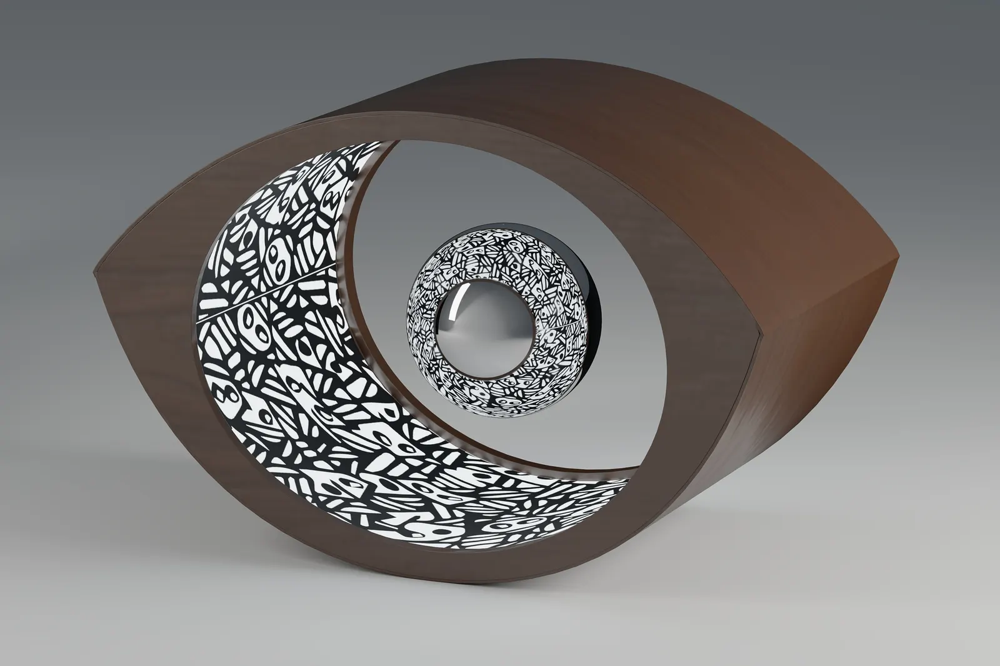
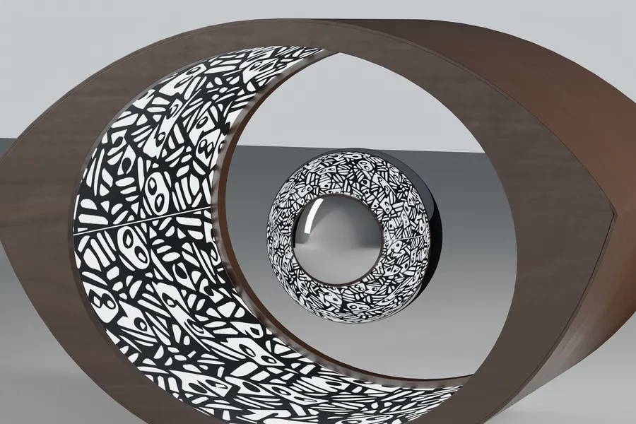

lampada da tavolo · 2017
Oopar
01 — La sfera
Ø 90, sospesa
Una sfera cromata di 90 mm fluttua nel campo magnetico, al centro dell’occhio, e riflette la luce che esce dal corpo.
01
02 — Il decoro
Madhubani
La fascia interna porta un decoro ispirato alla pittura Madhubani: è il punto in cui si incontrano la cultura indiana e quella italiana.
02
03 — Il corpo
Noce, a occhio
Il guscio in noce ha la forma di un occhio con i fianchi concavi; la luce esce dalla fascia dentro il tunnel.
03
04 — Le misure
300 × 195 × 200
Misure prese dal modello Rhino: 300 mm di larghezza, 195 di altezza, 200 di profondità; sfera Ø 90.
04
schedadal modello Rhino
larghezza300 mm
altezza195 mm
profondità200 mm
sferaØ 90 mm
corpoNoce
sferaCromo
parti4
premio1° Pending Cultures
immaginirender Vitrum


prossimo progetto — 10 / 10→
La Fornace